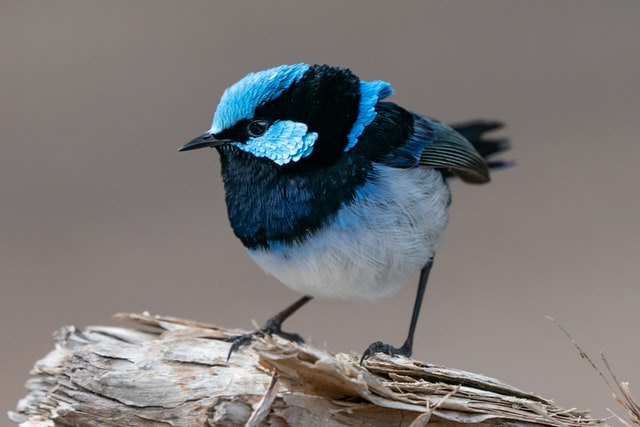

HTML 침착맨이란 무엇인가?
 웹툰 작가 이말년의 인터넷 방송 활동에 대해 기록한 문서.만화가 이말년이 인터넷 방송인으로 활동할 때는 이말년이라는 만화가 필명 대신 '침착맨'이란 닉네임으로 스트리밍을 하고 있다. 예명인 침착맨은 하스스톤 방송 초기에 "운빨이 난무하는 하스스톤, 조금 더 침착한 자가 승리한다."라는 뜻으로 사용했다고 한다. 원래 한창 웹툰을 연재할 때는 단순 취미생활 그 이상도 그 이하도 아니었으나, 2016년에 이말년 서유기가 완결되고 난 이후에는 아예 본인 스스로 웹툰 작가라 말하기 부끄럽다라고 할 정도로 스트리머 활동의 비중이 높다.
2018년 중반 즈음부터 주호민 작가의 작업실에 얹혀 생활하며 방송에 종종 출연하였는데, 반응이 좋아 어느새 고정 게스트가 되어 협업으로 다양한 콘텐츠가 쏟아져 나오는 것을 기점으로 10만 대에 머무르던 유튜브 구독자가 폭발적으로 치솟아 2019년 중반에 50만, 2020년 6월 말에는 70만을 넘어서는 기염을 토했고, 주호민 작가도 직접 스트리머 겸 유튜버로 데뷔하기도 했다. 2019년 기준으로는 각종 게스트를 섭외하여 인터뷰하는 토크 위주의 '침터뷰'를 중심으로 게임 방송[10]까지 다양한 콘텐츠를 다루고 있다. 아프리카TV에서는 주력 콘텐츠인 '보라(보이는 라디오)'를 트위치에서는 잘 보기 힘든데, 이 트위치에서 토크 위주로 방송진행하는 몇 없는 스트리머 중 하나라고 할 수 있다. 또한 MBC, SBS에서 방송을 진행한 경력, 인맥 등을 살려서 방송국에 밀리지 않는 섭외 능력을 보여주고 있으며, TV에 잘 나오지 않는 게스트들도 나오곤 한다.
웹툰 작가 이말년으로서의 활동을 쉬고 인터넷 방송인 침착맨으로 매체에 자주 등장하면서 사실상 침착맨 쪽이 본업이 되어가는 중이다. 매주 팬 카페에 주간 방송 계획을 공지하고 홍보 콘텐츠, CF 출연, 콜라보레이션등 다양한 방면으로 활동을 넓혀가고 있는 한편, 만화가의 정체성은 가끔 게스트 출연때 캐리커쳐를 그려주는 정도로만 남아있다. 웹툰 연재처인 네이버에서조차 이말년씨리즈를 '침착맨이 그린 웹툰'으로 홍보하는 등 인터넷 방송인으로 더 가깝게 비춰지고 있다. 최근 유퀴즈에 출연했을 때 본인을 전 웹툰작가로 소개하기도 했다.